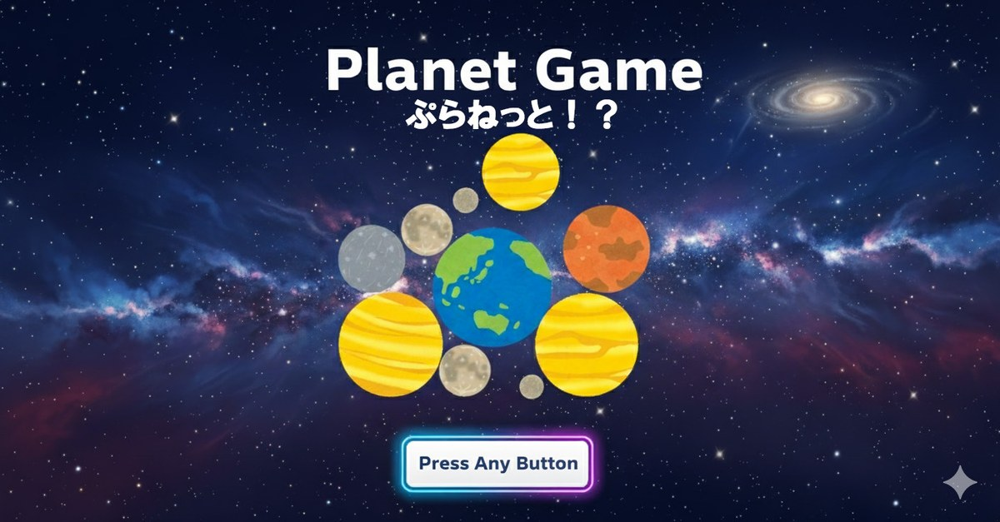
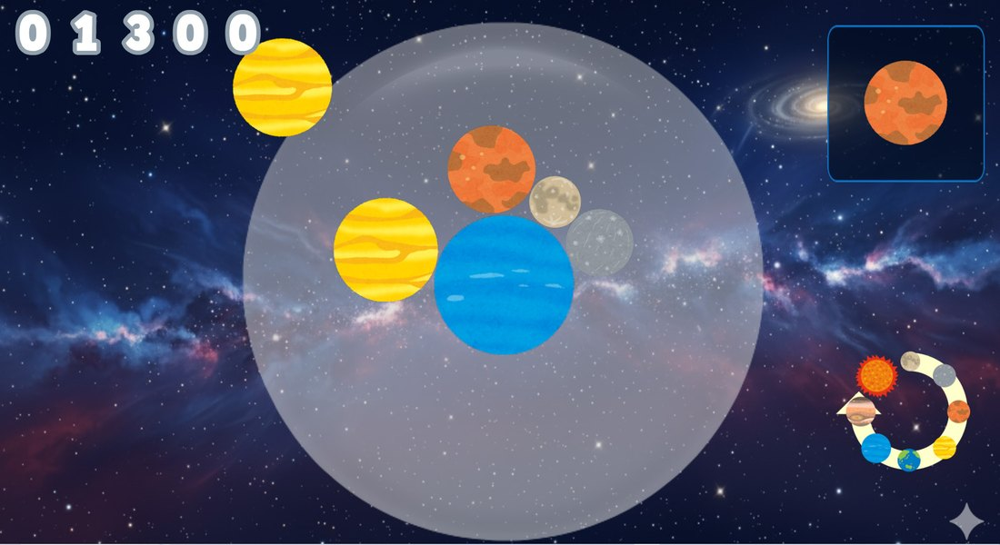
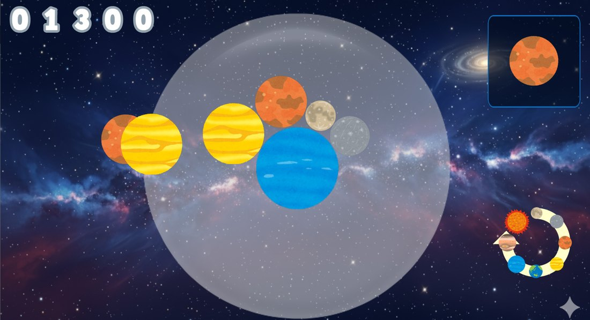
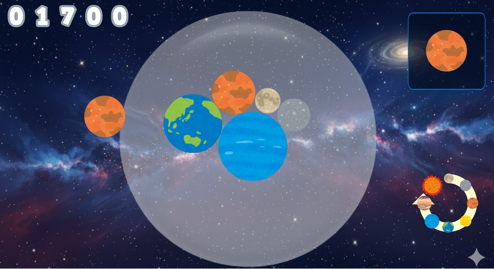
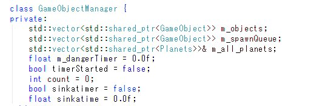
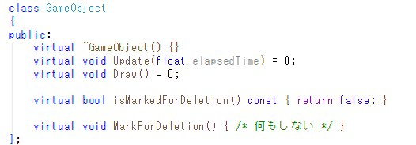

08
DirectX 11 / 個人制作
Planet Game Planet

- ジャンル
- パズルゲーム
- 開発環境
- DirectX 11
- 制作情報
- 個人制作
既存ゲームを再現できるかという考えから制作を開始。初めて物理演算を自作し、2Dでも安定した挙動になるよう試行錯誤しました。
Gameplay Video
プレイ動画
ゲームの流れ



ゲームオブジェクトの管理と更新
GameObject基底クラスを作成し、継承したObjectをリストで管理。リスト内のObjectのUpdateをまとめて呼び出す構成にしました。

